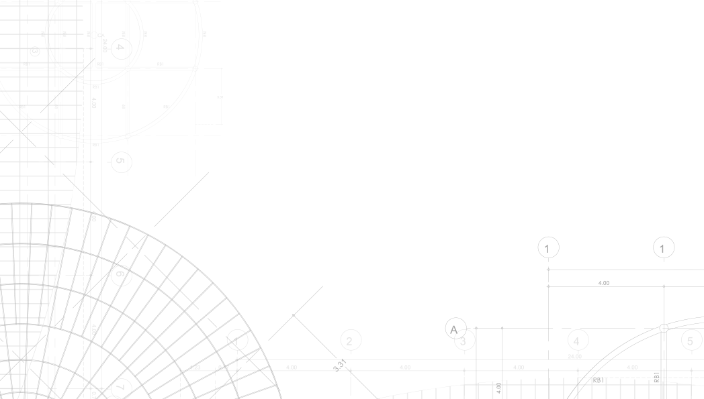

ליווי הנדסי ברמה אחרת
דיוק הנדסי, פיקוח בלתי מתפשר ושקט אמיתי לאורך כל הפרויקט.
עסיס הנדסה מלווה לקוחות פרטיים, חברות, תאגידים ורשויות מקומיות עם שירותי פיקוח, כתבי כמויות, אומדנים ובדק בית בגישה מקצועית, שקופה ואחראית.
- פיקוח בנייה פרטי ועסקי
- בדק בית ואיתור ליקויי בנייה
- כתבי כמויות ואומדני ביצוע
מיקוד
מהרעיון ועד המסירה
ליווי מקצועי משלב התכנון, דרך בחירת בעלי המקצוע ועד בקרה על איכות הביצוע, התקציב והעמידה במפרט.
Nisim Asis
Owner / Engineering Lead
שירותי הליבה
מעטפת הנדסית ברורה, מדויקת וישימה
01
פיקוח בנייה
פיקוח מקצועי על מהלכי הבנייה, תיאום מול הגורמים המבצעים, ליווי לאורך הדרך ובקרה על איכות הביצוע וההתאמה לתכנון.
02
כתבי כמויות
הכנת כתב כמויות מדויק המעניק בסיס נכון לתמחור, להתקשרות עם קבלנים ולהבנה אמיתית של היקף העבודה והעלות הצפויה.
03
בדק בית ואיתור ליקויי בנייה
בדיקה הנדסית המספקת תמונה מהימנה על מצב הנכס, איכות החומרים, רמת הביצוע וליקויים המחייבים טיפול או תיעוד.
אודות
ניסיון מעשי, אחריות מקצועית וראייה מלאה של הפרויקט
עסיס הנדסה הוקמה כדי לספק שירותים מקיפים בתחום ההנדסה והבנייה ללקוחות פרטיים, חברות, תאגידים ורשויות מקומיות.
תחומי ההתמחות כוללים בדק בית, איתור ליקויי בנייה, חישובי כמויות, הכנת אומדני ביצוע, פיקוח וליווי בנייה ושיפוצים.
במסגרת העבודה מתקיים שיתוף פעולה עם משרדי הנדסה ואדריכלות כדי לספק מעטפת רחבה של תכנון הנדסי, אדריכלות, עיצוב פנים ובדיקת מפרטי מכר.
המטרה היא לא רק לגלות בעיות, אלא לייצר ללקוח שליטה, ודאות והחלטות טובות יותר.
עקרונות העבודה

- בדיקה יסודית לפני כל החלטה הנדסית
- שקיפות מול הלקוח לאורך כל התהליך
- תיעוד ברור והמלצות פרקטיות
- זמינות וליווי גם בשלבים מורכבים
איך זה עובד
תהליך מסודר שמייצר שליטה וביטחון
אפיון והבנת הצורך
מגדירים מטרות, סוג הנכס, שלב הפרויקט והאתגרים המרכזיים.
בדיקה מקצועית בשטח או בתכנון
איסוף נתונים, בחינת מפרטים, כמויות, מסמכים ורמת ביצוע בפועל.
המלצות וליווי להמשך
הצגת ממצאים, תיעדוף פעולות ובניית דרך פעולה ברורה להמשך.
יצירת קשר
רוצים ליווי הנדסי מדויק? מתחילים כאן.
ניתן לפנות לטובת פיקוח, בדק בית, כתבי כמויות, אומדני ביצוע וליווי בנייה ושיפוצים.